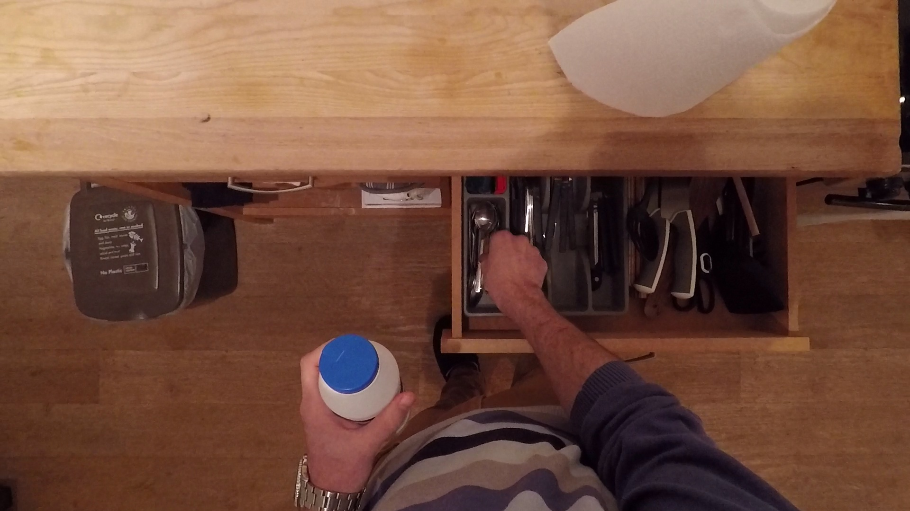

Sample 001



Caption comparison
Before
The drawer appears to be partially open, revealing a drawer with a handle that's positioned in the middle of a kitchen counter. A hand grasps the drawer's handle, suggesting that it's about to open. The drawer has a removable handle, indicating that the contents of the drawer are still in the drawer. The hand's movements suggest that the drawer is in a state of transition, suggesting a gradual movement.
The drawer appears partially open, revealing an assortment of items arranged in a compartmentalized tray. The tray is divided into sections, each holding different utensils and tools. Visible items include several knives with varying blade lengths neatly slotted into individual sections, a pair of scissors, and assorted cutlery such as forks and spoons. The items are organized, but there's a slight overlap of handles, indicating a casual placement rather than a meticulous order. On the far right, obscured by the angle of the drawer, are objects not clearly identifiable, suggesting additional storage beyond the immediate view. The drawer's wood finish matches the surrounding cabinetry, integrating it seamlessly into the kitchen's overall design.
During
In this frame, the person's hand is positioned in the middle of the kitchen drawer, revealing a more cluttered view of the contents of the drawer. The drawer's contents are now more visible, including a handful of utensils, such as a knife, a spoon, and a bowl. The hand's angle is slightly altered, indicating that the hand is now able to grasp the contents.
In this frame, the drawer is pulled further open, and more items are now visible. The previously seen utensils remain in place, but additional tools come into view, such as a handheld can opener, more cutlery, and possibly kitchen gadgets like a peeler or a bottle opener. There's a noticeable increase in the variety of items as compared to the first frame, and the array of utensils suggests a well-equipped kitchen drawer. The organization of the drawer remains consistent, with each item still in its designated compartment, yet the drawer's contents are densely packed, indicating a well-used space.
After
In this frame, the person's hand is positioned in the middle of the drawer, revealing the contents of the kitchen sink. The drawer's contents are visible, including the lid, which has been removed from the cabinet. The hand's angle is slightly different from that of the previous frames, suggesting a more gradual movement of the hand.
The drawer is now fully extended, offering a complete view of its contents. The organization is consistent throughout the entire length of the drawer, with each tool and utensil visible and accessible. The full extension reveals items that were previously hidden, including larger utensils and possibly some kitchen gadgets that are tucked away towards the back. The variety of items, from basic cutlery to more specialized tools, suggests a comprehensive collection designed to cater to a wide range of culinary tasks. The presence of multiple knives and utensils hints at the preparation of diverse meals, and the full view emphasizes the practical organization of the drawer.
Transition
Over the progression of these three frames, the drawer transitions from partially open to fully opened. Initially, the person's hand is seen opening the drawer, revealing a variety of items. As the sequence progresses, the hand's movements become more deliberate, indicating that the drawer is being opened or closed. By the final frame, there is a noticeable shift in the position of the drawer's handles, suggesting a gradual movement in the direction of the user's actions. This progression is indicative of a
As the drawer opens progressively from the first to the third frame, there's a clear transition from partial visibility to full exposure of its contents. Initially, only a fraction of the drawer's items is visible, mainly knives and some cutlery. As the drawer opens further, more items are revealed, expanding the view to include a variety of kitchen tools. The final frame shows the drawer in its fully extended state, displaying an orderly arrangement of utensils, which reflects a well-stocked and systematically organized kitchen drawer. Throughout these transitions, the orderliness of the drawer's contents remains intact, suggesting a functional and well-maintained storage system.